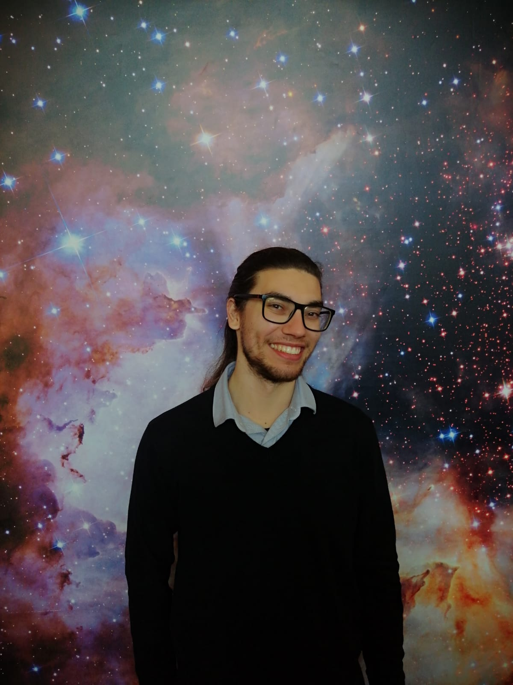

[Research topic or project title]
[Describe the question you are investigating, your approach, and why it matters.]
Explore my research, publications, and the questions that inspire my work.
Meet the researcher ↓
01 / About me
[Introduce your current role and institution here.]
[Describe your research interests and the questions that motivate your work.]
[Share a little about your background and what you enjoy outside research.]
Explore my research ↗02 / Scientific interests
[Describe the question you are investigating, your approach, and why it matters.]
[Introduce another project, method, or scientific interest.]
03 / Published work
[Authors in published order]
[Journal · Year]
[Authors in published order]
[Journal · Year]
[Authors in published order]
[Journal · Year]
[Authors in published order]
[Journal · Year]
[Authors in published order]
[Journal · Year]
[Authors in published order]
[Journal · Year]
04 / Beyond the papers
In the news · National Geographic Portugal
On television · RTP
Episode 19 ·
Exploring the future of space exploration, methane in Titan’s atmosphere, and the chemistry that produces organic molecules.
Watch the episode on RTP ↗Press release · IA
The Instituto de Astrofísica e Ciências do Espaço shares our research on methane signatures in Titan’s atmosphere.
Read the press release ↗In the news · Expresso
Titan, the early Earth, and questions about the origins of life.
Read the article ↗05 / Get in touch
For research, collaborations, or a conversation about science.